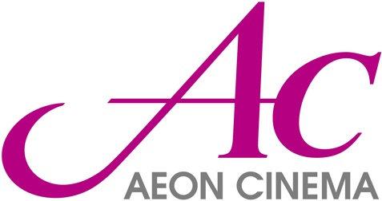
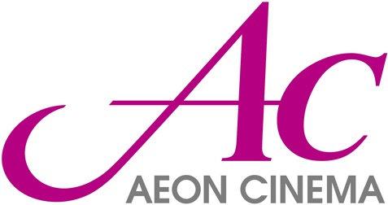

参加メンバー

江崎 浩（チェア）
東京大学

塚田 学（チェア）
東京大学


 

発表論文
-
The Software Defined Media Ontology for Music EventsWorkshop on Semantic Applications for Audio and Music (SAAM) held in conjunction with ISWC 2018, Monterey, California, USA., October 2018.
-
SDM3602:インタラクティブ3Dコンテンツの自由視聴点再生情処論文誌：デジタルコンテンツ(DCON)トランザクション,Vol.6, No.2, 2018年8月
-
LiVRation: VRによる自由視聴点映像音声のインタラクティブ再生マルチメディア，分散，協調とモバイル(DICOMO2018)シンポジウム, June 2018.
-

Software Defined Media Ontology: 分散収録環境のための視聴空間の再現フレームワーク東京大学 情報理工学系研究科 電子情報学専攻 修士論文、2018年3月 -
Software Defined Media 活動報告 2017WIDE報告書, March 2018.
-
Software Defined Media: 視聴空間サービスのソフトウェア制御日本ソフトウェア科学会学会誌『コンピュータソフトウェア』「ネットワーク技術」特集, September, 2017. -
SDM Ontology: Software Defined Mediaのメタデータ管理のためのOntologyマルチメディア，分散，協調とモバイル(DICOMO2017)シンポジウム, June 2017.
-
優秀論文賞SDM3602:音楽イベントのための自由視聴点映像音声のインタラクティブ再生マルチメディア，分散，協調とモバイル(DICOMO2017)シンポジウム, June 2017.
-
Software Defined Media: Virtualization of Audio-Visual ServicesIEEE International Conference on Communications (ICC2017), Paris, France, 21-25 May 2017
-
Software Defined Media 活動報告 2016WIDE報告書, March 2017. -
Investigating integration between auditory and visual location information presented in an augmented-reality deviceThe Journal of the Acoustical Society of America 140(4):3277-3277, October 2016.
-
New Recording Application for Software Defined MediaAudio Engineering Society Convention Paper, 141st AES Convention, Los Angeles, USA, September 2016.
-
Smartphone-Based 360° Video Streaming/Viewing System including Acoustic ImmersionAudio Engineering Society Convention Paper, 141st AES Convention, Los Angeles, USA, September 2016.
-
Tangible Sound Object: オブジェクトベースの 音響システムのためのタンジブルインターフェースマルチメディア，分散，協調とモバイル（DICOMO2016）シンポジウム、July 2016 -
研究科委員長表彰Tangible sound : a tangible interface for object-based sound systemMaster’s thesis, KMD:Graduate School of Media Design, Keio University, March 2016. -
Software Defined Media 活動報告 2015WIDE報告書, March 2016. -
Software Defined Media 活動報告 2014WIDE報告書, March 2015.